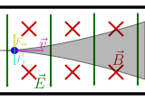
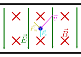
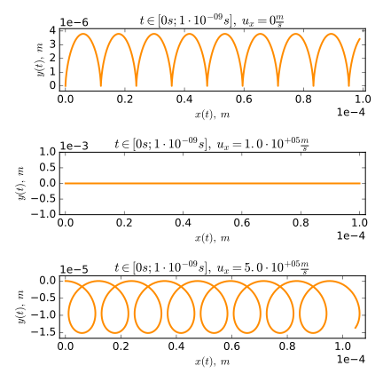
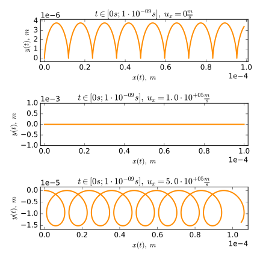

A common topic in Highschool physics is the electromagnetic velocity filter/selector ( Wienfilter). It turns out that the reason it works has only little to do with what students are thought.
Disclaimer: I'm not an export on any of this. This has been reviewed by a hand full of people but other than that the mathematical result below remains untested. I greatly appreciate all comments!
Electromagnetic velocity filters have applications in mass-spectrometry (=in trying to classify charged particles such as Ions based on their mass-charge-ratio). It is possible to produce streams of such particles. Unfortunately, particle in such streams have varying speeds but the method used for the actual classification requires the incoming stream of particles to have a constant and known velocity. Electromagnetic velocity Filters are used to deflect particles of unwonted speeds and only let particles witch already have a specific speed v̅ pass to the next step in the classification process. A simple illustration of a EM Filter can be seen on the right. All relative location given (left, right, horizonatlly, ...) are in refrence to this illustration (Note: you could turn the entire setup upside down without effecting how it works). In the setup a homogeneous magnetic field ⃗B points into the drawing plain and a homogeneous electric field ⃗E is perpendicular to the magnetic field. The steam of particles is sent in on the left and (initially) the particles velocities are at right angles to both the magnetic and the electric field. The electromagnetic force on each particle is the sum of the electric and magnetic forces (⃗Fm and ⃗Fe respectively) witch are aligned as shown above. So since the magnitude of the magnetic force depends on the magnitude of the velocity, it's obvious that there has to be some speed v̅ such that electric and magnetic forces cancel perfectly. In this case the net force on the particle is zero so it will not be deflected but move on a horizontal line. For particles moving at a speed other than v̅ there must be a net force hence they are deflected thus filtered out from the particle stream. Solving the described equation yields that the critical speed is v̅ = E/B (B and E are the magnitudes of the magnetic and electric fields respectively and the full equation is knowen as the Wien Condition [see here]). A full derivations can be found online.
As previously stated this is the explanation you will likely find right away when researching the topic. At first glance it seams reasonable and when I was introduced to the problem (in Highschool) I was satisfied with this. But recently my attention was drawn back to the problem and I realized that this explanation is deeply floored.
In fact the explanation is only valid for the very fist moment. This is easy to understand when looking at edge cases. Suppose the particle placed in the filter has no initial velocity (it is 0). At fist, it won't be affected by the magnetic field. So the only force acting on the particle will be the eclectic force. According to the explanation given above this will cause the particle to move on a vertical line. Here is the problem though, moving on a vertical line means that the velocity is non-zero and the magnetic force has to be consider. This magnetic force will be perpendicular to the magnetic field and the velocity, hence the particle velocity will be in the plane drawn on the left and can be described using two coordinates ⇒ ⃗v := (vx, vy, 0)T. As there is no way the particle will ever leaf the xy-Plain, the z components of vilocity and position are just 0. To simplify the equations the z components will be dropped were ever convenient (they are implicitly considered to be 0). Suppose the Electric Field ⃗E is given by (0, -E, 0)T and the Magnetic Field ⃗M by (0, 0, B)T. For simplicity, define the constants ω := qB/m (q is the charge of the particle, ω is the Cyclotron angular frequency) and v̅ := E/B (just as above). Than the definition of the Electromagnetic force can be simplified to the following set of linked differential equations:

This can be solved using the matrix-exponential eAt (Note: eAt = ℒs-1{(sI - A)-1} were ℒs-1 is the inverse Laplace Transform with respect to s, and I represents a 2⨯2 identity matrix). Multiplying both sides with eAt applying the product rule, integrating both sides and solving for ⃗v show that a general solution is:
Here ⃗c = (cx, cy)T is a constant of integration. Defining the initial condition ⃗v(0) := (ux, uy)T yields that:
Integrating and requiring that x(0) = x0 and y(0) = y0, results in the particles trajectory:
 

Let's considerer an electric field E of 30kV/m, a magnetic field M of 300mT, and an electron (mass m = 9.109 10-31kg, charge q = -1.602 10-19C). If the initial conditions x0, y0 and uy are set to 0, the effects of ux can be studied. There are plots of the trajectories for ux = 0 (top), ux = 1 105 m/s = v̅ = E/B (middle), and ux = 5 105 m/s = 5 v̅ (bottom) on the right. The animation below shows the same for ux taken form a range form 0 to 5 v̅. Unsurprisingly, this model still predicts that particles with ux = v̅ will move on a horizontal line (middle plot). What's new is that slow particles (top plot) move on a cycloid curve and fast particles on a prolate trochoid. It is nice to notice, that the trajectories are periodic (with a period of | 2π/ω |) and it will be sufficient to considered a single period in further discussions. The main Problem with this trajectory is that the electron is not deflected in any of these cases. In fact, each of these trajectories is very close to a straight line because the range of y is very small compared to that of x (Especially because the range of y is constant after one period, but the range of x increases over time).
It is neat that these trajectories can be constructed as Roulettes, specifically as trochoides (the path traced by a fixed point on a circle rolling on a straight line). For ux = 0 the trajectory turns out to be a common trochid (also called a cycloid). The Animation below shows how this curve could be constructed as a roulette.
Similarly, the trajectory for ux = 5v̅ is a a prolate trochid. The animation on the left rolls a small circle on a straight line, than traces a fixed point on the circle but outside its boundary to construct the particle trajectory.
Trochids are a superposition of linear and circular motion. Electric fields generally cause linear motion while magnetic fields cause circular motion. It seams reasonable, that a superposition of electric and magnetic fields would cause a particle to move on a path which is a superposing of linear and circular motion. So this trajectory isn't that surprising after all.

But if the filter dose not deflect any particles regardless of speed, how dose it work? The short answer is it dose not. The filter dose not filter out all particles with unwanted speeds. But it allows viewer particles to pass if they have the wrong ux.
Looking at the trajectories above shows that there are times when the electron moves on a horizontal line. If the Electromagnetic fields where switched of/ended exactly at a maximum y value (witch happens to be the time when it is momentarily moving on a horizontal line) the electron would keep flying in the horizontal direction and be a part of the filtered particle stream. Fortunately times when the electron moves horizontally are quite rare. Lets considerer all particles deflected by more than ±5° to be successfully sorted out. Sticking to the example from above the angle α = arg{vx + ivy}, which corresponds to the slope of the tangent line to the trajectory, can be plotted against time (see the solid line (and the left y-axis) in the plot on the left or the animation below). The ±5° range and the curves intersections with it's boundary's have been marked in the plot. This clearly shows that the middle ux = v̅ curve is always in the ±5° range. On the other hand, for ux other than v̅ there are only small time intervals in which particles are moving horizontally. At some point the EM fields will end because the filter has a finite size (this assumption may not be very close to real magnetic fields which decrees in strength but don't have a clear boundary but it is the best one can do without being specific about the dimensions of the filter) but at what point in the trajectory's period this will occur is basically random. So if r is the ratio of time the trajectory spends in the ±5° range to it's period, the probability of any given electron ending up in the output particle stream should be r.
Particles with the wrong initial speed not being sorted out would not be a problem if the particles were moving at v̅ when ever they moved horizontally (so if the setup accelerated them to the desired speed). To see if this is so the plot on the left and the animation below show a dashed line which represents the magnitude of the particles velocities (and corresponds to the right y-axis). Unfortunately the plots clearly show that the electrons do not simultaneously move on a horizontal line and at v̅. So the output particle stream cannot be expected to consist only of particles moving at v̅ instead all velocities are to be expected (assuming that the input stream also contained particles moving at all possible velocities), but there will be significantly viewer particles moving at undesired speeds than at the desired speed v̅.
Let's express significantly viewer particles moving at undesired speeds
than at the desired speed v̅
in a more rigorous way.
The ratio/probability r as defined above can be considered to be a probability distribution r(ux). A plot of r vs ux is on the right. So the solid orange line represents the probability that a particle with ux will be deflected by ±5° or less. Clearly, there is one spike around v̅ which will always pass through. For any other ux chances are they will be sorted out. Since the ±5° range was an arbetrary choise, the dashed lines show the effects of making different choices. The result is what was to be expected: A narrower definition of "moving horizontally" means that less particles of the wrong speed pass though the filter.
So my conclusion is: